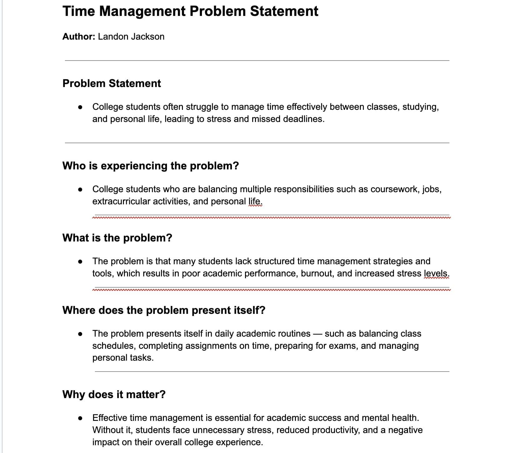

About
My main goal in life is to become a software engineer. I am a Computer Science major and have always wanted to be a software engineer. I have always enjoyed coding and I love the aspect of creating an entire algorithm just from code.
In life, I want to accomplish graduating college first. That would be my first milestone. On the way I would like to meet a lot of great people who have a positive influence on my life and my journey throughout college. I would want to get into a job I actually enjoy and I want loving friends and family in my life.
Some words people would use to describe me are hard working and caring. I would admit to get easily distracted but when I am focused on an activity I really enjoy then I am really concentrated and won’t stop working. I am definitely considered a problem solver and won’t take the easy way out of a problem and I will actively search for a solution.
Some words people would say about me at my funeral or when I retire is that I am a very diverse thinker and I find many ways to solve one problem. People would say that I am a very hard worker and that I care about my work environment and the people around me.
Skills
- Hard working
- Caring
- Easily distracted (but highly focused on things I enjoy)
- Problem solver
- Diverse thinker
Problem Statement
This is my CSCE190 problem statement assignment. The screenshot below shows my completed Google Doc:
Affinity Diagram

This affinity diagram analyzes the Problem Statement: College students often struggle to manage time effectively between classes, studying, and personal life, leading to stress and missed deadlines.
The diagram clusters ideas into four groups — Responsibilities, Symptoms, Causes, and Consequences — to help reveal patterns and prioritize design directions for a time-management solution.
Projects
No projects yet
Contact
Email: lcj9@email.sc.edu
Sketches

Three wireframe sketches show how the time-management app would look in different scenarios: a daily dashboard for tracking classes and tasks, a focus session timer for productive studying, and a study-group finder to coordinate with peers.